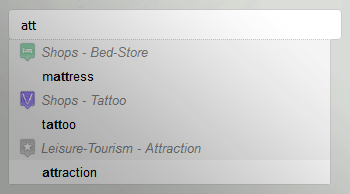
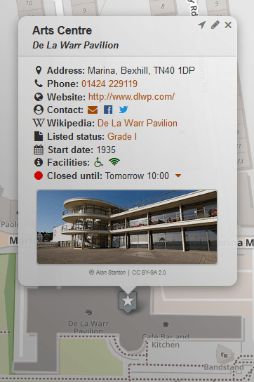

Bexhill OpenStreetMap
Find an interest
Tips to get started
- Enter a keyword above to see a group of interests.
- Find an address by using the () button.
- Right-click the map to query specific details.
- Fly to a suburb by clicking the minimap below.

Note: areas to the west are work-in-progress.
Bexhill-OSM is a community based mapping project run entirely on your donations. It aims to help people find and gather information on places in Bexhill-on-Sea, UK.
View Help [] for more assistance.
Contact details can be found under Information [].
© Bexhill-OSM 2016-2017
Help
Map Controls
Context-menu
Find Interest
Tabs
Points of Interest (POI)
Walking Routes
Historic Tour
View demonstration videos
Map Controls
The zoom controls ( / ) will enlarge and shrink the map.If you are in the area your current position can be located, just click the arrow icon ().
Find an address on the map by entering part of it into the search box (). A selection will appear if multiple results are found.
Share your current view and selected options by clicking the link icon () and copying the text displayed.
To clear all current layers on the map, click the bin (). Right-click / long press will reload the website to defaults.
Various map styles can be displayed using the overlay picker - located at the top-right of the page.

Context-menu
Anywhere on the map, right-click (desktop) or long-press (mobile).Query area/street/place: Display information on an item under the cursor depending on zoom level (middle-clicking the map acts as shortcut).
Walk to here: If location is turned on and you are within the bounds of the map, this will create walking directions from where you currently are to this location.
Add walk point here: Plot a marker to create a walking route.
Centre map here: Useful when creating a bookmark or link.
Leave a note here: Report a mistake or something missing.

Find Interest
Type the first few letters of a keyword (e.g. 'police', 'bike', 'diy'). Click the word in the category you are interested in to display it on the map.To see only currently open facilities, check the box beneath.

Tabs
[] Points of Interest: Select an interest to be displayed on the map.[] Walking Routes: Select from a few local walks, or create your own path through the many twittens.
[] Historic Tour: Travel back in time and discover the history of the town.
Points of Interest (POI)
To begin displaying POIs, zoom to an area on the map and click up to 3 POI groups. After a few moments the corresponding items will be displayed on the map as markers. Larger map areas may take longer to load.

Create walking directions () to this marker, your location needs to be turned on and be within the bounds of the map.

Walking Routes
Find a route by either entering an address, or using the map context-menu. Add additional markers by dragging an existing path to a new location.
Historic Tour
Navigate by either selecting from the list-box or using the arrows to jump between articles. Mobile users may also swipe the title-bar to navigate. Use the map-icon within an article to display related information on the map.